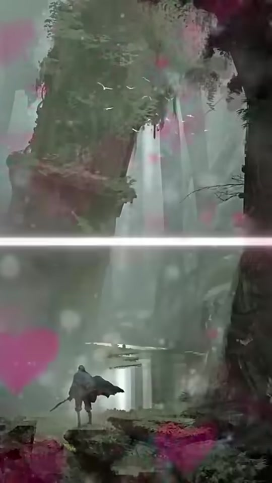
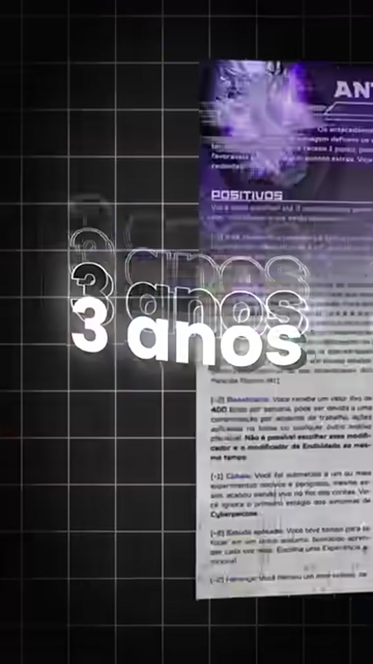
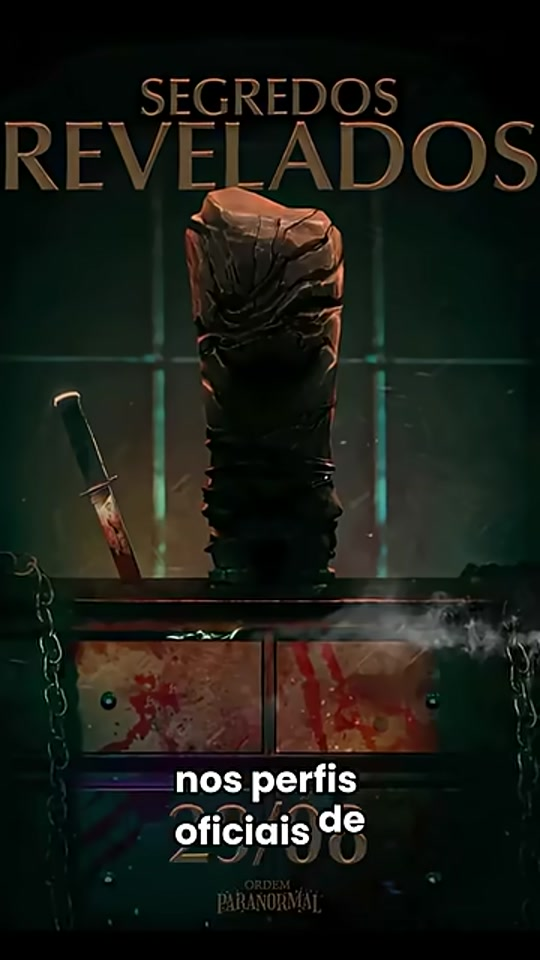
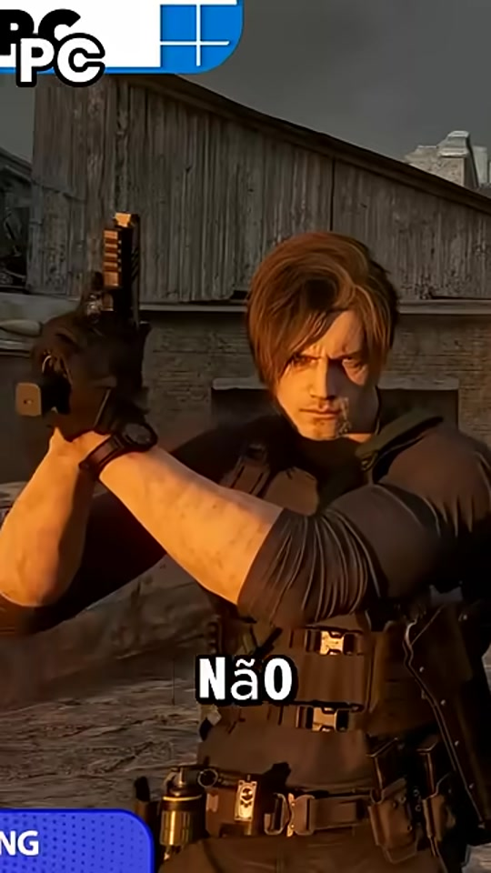

A reason to keep watching.
An opening question, a comparison or a clear promise introduces the subject right away. I shape the opening to spark curiosity and make the video’s purpose clear.
HARLEY AGUILAR · CONTENT & VIDEO
I’m Harley Aguilar, and I edited every video presented in this selection. My personal social media project combines opening hooks, dynamic editing and visual storytelling for a gaming and tabletop RPG audience.
PROJECT CREDITS
Public metrics observed on October 6, 2026. Rounded platform counts are approximate.
MY EDITING / TECHNIQUES & INTENT
An opening question, a comparison or a clear promise introduces the subject right away. I shape the opening to spark curiosity and make the video’s purpose clear.
I combine concise cuts, pauses and changes of shot to give the narrative pace. The goal is to capture attention while leaving room to understand each idea.
Supporting footage, on-screen text and visual hierarchy reinforce what is being said. I organize these elements for vertical video, guiding the viewer through the content.
Five short-form videos edited by me. Watch how the opening, pacing and visual elements support each topic. Original videos are in Portuguese.

EDITED BY HARLEY AGUILAREdited by Harley Aguilar
01 / RECENT EDIT
A concise set of recommendations in short-form video.

EDITED BY HARLEY AGUILAREdited by Harley Aguilar
02 / RECENT EDIT
An original concept presented in a vertical format.
Edited by Harley Aguilar
03 / RECENT EDIT
A curated topic developed into a video story.

EDITED BY HARLEY AGUILAREdited by Harley Aguilar
04 / RECENT EDIT
Content shaped around a community and its interests.

EDITED BY HARLEY AGUILAREdited by Harley Aguilar
05 / RECENT EDIT
Two perspectives on the same subject.
You can also watch each video directly on YouTube, TikTok or Instagram.
PERFORMANCE / SELECTED HIGHLIGHTS
Nine selected publications on TikTok and YouTube each surpassed 10,000 views. A collection of strong results across different videos and platforms.
Six YouTube publications above; three TikTok highlights below. Curated results, not the average of all videos. Approximate public counters observed on October 6, 2026; views are not unique viewers.
CONTENT / RESULTS
TIKTOK
374.5Kvideo views
TIKTOK
117.4Kvideo views
TIKTOK
68Kvideo views
SPOTLIGHT / RPG MAPS
A practical subject condensed into 23 seconds of video. Saves and shares show how the audience responded to an informative format.
Watch the case on TikTok ↗Explore the complete work and follow the next videos.
01 / TIKTOK
3,730 followers
126.6K likes across the profile
02 / YOUTUBE
1.37K subscribers · 57 videos
422,538 total views
03 / INSTAGRAM
57 posts
Original content and short-form video
Sources: public profiles and linked videos · Snapshot: October 6, 2026 · Counts may change. Views and followers are shown by platform and do not represent a unique audience.